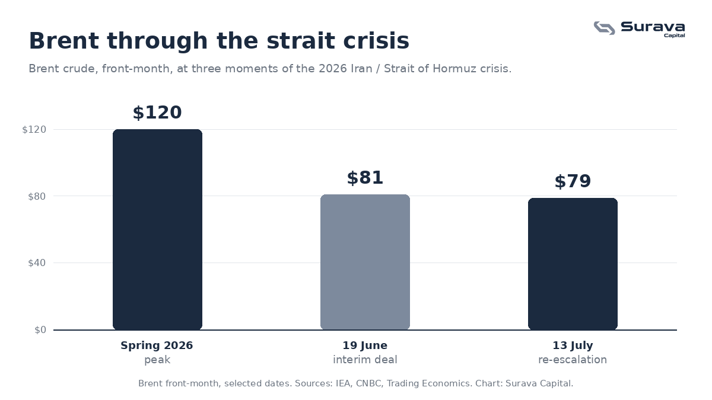

What happened this week
After weeks in which markets had begun to treat the Iran conflict as winding down, the standoff over the Strait of Hormuz flared again. The United States and Iran traded attacks around the waterway, US forces carried out fresh strikes, and the interim peace agreement reached in June was thrown back into doubt. President Trump said he now considered the truce over and floated charging ships a toll, reportedly around 20 percent, for safe passage, while threatening a renewed blockade. Iran, for its part, again declared the strait closed, a claim the US military disputed.
Oil responded the way it always does to this waterway. Brent, the main international benchmark, rose more than 4 percent on Monday to around 79 dollars a barrel, its highest level since late June. That is a meaningful move, but it is worth keeping in proportion: it is a long way below the spike toward 120 dollars that the market saw in the spring.

Why this is different from the spring
In February and March the story was a genuine, sudden supply shock. A fifth of the world's seaborne oil moves through the strait, tanker traffic collapsed, and the market repriced violently. What we are seeing now is different in character. It is not a fresh shock so much as a fragile agreement fraying at the edges. The market keeps trying to price a return to normal, and the situation keeps pulling it back.
That is why the price sits where it does. The spring panic has drained out, but a risk premium refuses to leave, because every step toward resolution is followed by a step away from it. For an investor, the useful takeaway is not a price target. It is that a geopolitical risk the market has declared "resolved" can reprice overnight, and this one keeps proving it.
The part that matters most: the Fed's bind
The headline is the strait. The consequence that actually reaches your portfolio runs through the Federal Reserve. An oil-driven price rise is a supply-side shock, and supply-side shocks put a central bank in an awkward position: the textbook response to rising inflation is to tighten policy, but tightening into a supply shock risks slowing an economy that is already absorbing higher energy costs.
Two things make this moment sharper. First, the Fed has a new chair, Kevin Warsh, who is due to give his first monetary policy testimony to Congress this week, with fresh inflation data landing alongside it. Second, and more striking, markets have swung to pricing a strong chance of a rate hike in September. That is a notable reversal. Coming into the year, the widely held assumption was that the next move would be a cut. Renewed energy inflation has helped flip that expectation on its head.
This connects directly to something we wrote about recently. In our piece on why gold responds to real yields, the core idea was that gold's appeal depends on the gap between inflation and what safe assets pay after inflation. When the market starts expecting rate hikes rather than cuts, that gap tends to widen in bonds' favour, and gold has indeed come off its highs as those expectations shifted. The strait, the oil price, the Fed, and the gold price are not separate stories. They are one chain.
Why a Swiss investor should care
It is tempting to file all of this under "American problem". It is not. Oil is priced on a global market, so a move in Brent feeds into energy costs everywhere, including Switzerland, regardless of who produces the barrels. Higher energy prices work their way into transport, heating, and goods, and from there into the broader inflation numbers that the Swiss National Bank and the European Central Bank have to respond to. The specific institutions and the magnitudes differ, but the same basic tension, a supply-side price shock colliding with a central bank's inflation mandate, applies on this side of the Atlantic too.
What we are watching
Three things over the coming days. The fresh inflation data and Chair Warsh's testimony, which together will tell us how seriously the Fed is taking the energy pass-through. Whether the strait dispute hardens into an actual blockade or toll regime, or cools back toward the June framework. And whether the risk premium in oil starts to look structural rather than temporary, which is the difference between a headline and a regime.
We are not calling a price and nothing here is a recommendation. The point is the shape of the problem. The easy version of this story, "the war is ending, oil comes down, rates get cut", has not held. The harder version, where a fragile truce keeps a floor under energy prices and forces a reluctant central bank to stay tight, is very much still on the table. When you read the next strait headline, the variable worth following is not the barrel. It is what the barrel does to the Fed.
This article is for general educational and informational purposes only. It is not investment advice, a recommendation, or an offer of any regulated financial service. It reflects conditions as of 13 July 2026 and may be overtaken by events. Investing involves risk, including the possible loss of principal, and past performance does not indicate future results. Views expressed are those of Surava Capital. Data cited from IEA, CNBC, Al Jazeera, and Trading Economics.